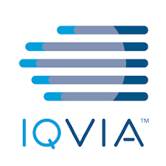

- C-Suite and Board-Level Engagement: Present AI strategy, governance frameworks, and business impact to executive leadership and board committees. Directly advise C-suite on enterprise AI priorities, risk mitigation, and strategic investments.
- Governance Process Advisor: Led overhaul of enterprise AI governance by introducing streamlined approach that minimizes bureaucratic friction while integrating with IT PMO processes.
- Policy Rationalization: Designed and deployed enterprise-wide GenAI framework harmonizing 10,000+ policies across three merged health systems. Delivered $2M in labor cost savings and 40x improvement in project efficiency.
- Epic-First Strategy: Led fundamental shift in enterprise AI strategy from custom in-house builds to integrated Epic-based solutions. Compressed deployment cycles from 8 months to 2 months. Launched 6 successful integrations delivering $1.8M in operational savings.
Urmila Ravichandran
I'm an AI Strategy Executive
Executive Summary
AI Strategy Executive | Built for the Gap Between Vision and Reality
I build AI programs that are real: governed, deployed, and measured. Over eight years leading enterprise AI at one of the largest health systems in the Midwest, I have learned that the gap between AI strategy and AI reality is where organizations win or lose. I have spent my career closing that gap. $3.8M in measurable business value, 1M+ patient records enriched by clinical algorithms, and a governance framework that has kept high-stakes AI responsible and auditable at scale.
What makes my perspective unusual is that I have seen enterprise AI from every angle: the executive strategy conversation, the clinical workflow redesign, the model governance review, and the 2am production incident. I understand what breaks, why it breaks, and how to build organizations where it does not. I lead with business outcomes, operate with technical depth, and build the kind of institutional trust that allows AI to actually get deployed, not just approved. I am completing the CMU CDAIO Certificate Program and seeking a senior leadership role at a company that is serious about translating AI strategy into measurable business value.
By the Numbers
3.8M+
Business Value Delivered
From Deployed AI
2.5M
AI Portfolio Managed
Strategic Budget Owned
10
Hospital System Scale
Deployment & Governance
1M+
Patient Records Enriched
Clinical Algorithms
36
Cross-Functional Team
Direct & Stakeholders
23+
Peer-Reviewed Publications
Research & Innovation
220+
Academic Citations
Global Recognition
Letters of Recommendation
What peers and senior leaders say about the work. Click to view the full recommendation letters (PDF)
Josh Holen
Senior Key Account Executive, Google
"Urmila’s impact is best defined by her ability to move from 'vision' to 'deployment'. She knows how to navigate complex internal politics and "get the foot in the door" with innovation and leadership teams to drive change." – Vendor Partner & Industry Colleague for 3+ years
Dr. Nirav Shah
Associate Chief Medical Informatics Officer of AI and Innovation, Endeavor Health
"Her expertise does not just enable these innovations to succeed; it makes them possible in the first place." – Mentor & Senior Leader for 10+ years
Rupesh Mandala
Systems Director, Data and Analytics, Endeavor Health
"Her efforts in furthering responsible AI and SDOH initiatives were instrumental in putting Endeavor on Becker's list of Top 25 Hospitals for AI Readiness." – Cross-functional collaborator and Mentor for 9+ years.
Dr. Mukund Nakhate
Physician, Clinical Informatics and Research Coordinator, Endeavor Health
"Exceptional doesn’t begin to describe Urmila; she transforms every challenge into an opportunity for innovation." – Senior Research Collaborator for 6+ years.
Mohammad Imran Beig
Manager of Data Governance & Reliability, Endeavor Health
"What has stood out most over the years is her ability to bring people together. She works seamlessly with engineers, analysts, clinicians, vendors and leadership..." – Fellow Manager & Mentor for 9+ years.

Dr. Calum Yacoubian
Director NLP Healthcare Strategy, IQVIA
"I have witnessed the excellence with which she works effectively within multidisciplinary teams – encompassing clinicians, IT specialists and 3rd party companies." – Vendor Partner & Industry Colleague for 5+ years
Leadership Philosphy
I lead with six core principles:
Strategic Clarity
Every AI initiative connects to a business outcome I can defend to a CFO before the first model trains.
Organizational Trust
AI fails in adoption, not algorithms. I build relationships that move AI from pilot to production.
Accountable Governance
Responsible AI is a process, not a statement. Ethics and monitoring are built into every lifecycle.
Intentionality
I build with transparency. The "why" is as clear as the "how."
Enablement
Give teams the tools and trust to own their work. I lead through empowerment, not control.
Connection
Collaboration is human-centered. I build momentum and trust across all teams.
At the heart of all this is a belief: AI leadership carries real obligation. Not just to the organizations we serve, but to the patients, communities, workforces, and future generations whose lives our decisions touch.
Work Experience
Manager, Data Science and AI Engineering
Endeavor Health | Evanston, IL | February 2019 – Present
Business Intelligence Analyst – I
NorthShore University Health System | Evanston, IL | February 2018 – December 2019
Research Assistant
Carnegie Mellon University | Pittsburgh, PA | August 2017 – December 2017
Clinical Analytics Intern
NorthShore University Health System | Evanston, IL | June 2017 – August 2017
Teaching Assistant
Carnegie Mellon University | Pittsburgh, PA | January 2017 – December 2017
Systems Engineer
Infosys Ltd. | Hyderabad, India | May 2014 – May 2016
Education and Skills
Education
- Chief Data AI Officer Certification
Carnegie Mellon University, Pittsburgh, USA - March 2027
In Progress - Master of Information Systems Management
Carnegie Mellon University, Pittsburgh, USA – Dec 2017
Relevant Coursework:- Machine Learning
- Data Mining
- Business Intelligence & Data Management
- Statistics for IT Managers
- Database Management
- Decision Making Under Uncertainty
- Organizational Design & Implementation
- Managing Disruptive Technologies
- IT Business Leadership
- IT Consulting
- B.Tech, Computer Science Engineering
Jawaharlal Nehru Technological University, India – Apr 2014
Technical Skills
- Machine Learning & Predictive Modeling
- Deep Learning & Neural Networks
- Natural Language Processing (NLP)
- Generative AI with LLMs
- Prompt Engineering & RAG for GenAI
- Statistical Analysis & Experimental Design
- Data Visualization & Dashboarding
- Clinical & Operational Data Integration
- SQL & Relational Databases
- R Programming
- Python Programming
- Java
- Google Cloud Platform (GCP)
- IQVIA Linguamatics
- Epic EMR Systems
- Git & GitHub (Version Control)
- MLOps & Model Deployment
Soft Skills
- Deep Listening with Empathy and Intent
- Systems Thinking
- Strategic Problem Solving
- Rapid Learning & Adaptability
- Leading with Influence and Initiative
- Fosters inclusive team environments
- Driving Alignment Across Technical and Clinical Teams
- Building Trust and Momentum Across Teams
- Adapts roles and priorities flexibly based on evolving team needs
- Provides and receives constructive feedback to strengthen team performance
- Human-Centered Design Thinking
- High Ownership Mentality
- Resilience in Ambiguous or Under-Defined Contexts
- Clear Communication Across Roles, Levels, and Domains
- Mentorship and Empowerment-Oriented Leadership
Passion Projects
Side projects I tinker with. Experiments in applying AI to fun problems I care about. Just a to stay hands-on, on-trend and keep learning.
Med-Sim
AI-powered clinical decision training simulator
Gamified learning platform for medical students, residents, and nursing staff. Uses real patient scenarios from clinical data with branching decision trees and AI-generated learning summaries grounded in published clinical guidelines. Learners receive immediate feedback on clinical reasoning and can explore alternative treatment pathways.
Building with: Google Cloud Run, Firestore, Claude API
TruthLayer
Enterprise GenAI ROI audit tool
AI-powered assessment tool that evaluates whether enterprise AI initiatives are delivering documented business value or producing AI theater. Generates structured value assessments, identifies risk areas, and produces red-flag reports for AI leaders and CFOs. Built to answer the question executives actually care about: is this AI working?
Building with: Google Cloud Run, BigQuery, Claude API
Awards & Nominations
Project recognition and nominations for work I led or played a central role in delivering.
ONE IT Transformation and Ingenuity Award
Endeavor Health, 2026
Service Value Award
Endeavor Health, 2025
Pursue Excellence Award
Endeavor Health, 2025
Top Featured Poster Abstract
SHEA Spring Conference, 2024
Nominated – Eye on Innovation Awards
Gartner Healthcare, 2024
Best AI Solution for Healthcare
IQVIA-featured SDOH project, 2023
Editorial Publication
Journal of Hospital Medicine, 2021
NorthShore Excellence Service Value Award
NorthShore University HealthSystem, 2021
Insta-Award
Infosys Ltd., 2016
Media Coverage
Media coverage featuring projects where I served as a key contributor on the data science team. While the articles highlight broader project outcomes and organizational impact, they reflect work to which I made substantial contributions in analytics, modeling, and innovation.
- Healio: ID consult shortens antibiotics – April 2024
- Becker’s Hospital Review: 86 Health System Execs – Feb 2024
- IQVIA: Closing Care Gaps Using SDOH – June 2023
- Healthcare Innovation Group: Extracting unstructured SDOH – May 2023
- CareEvolution: HIMSS Sessions to Attend – April 2023
- Healthcare IT News: NorthShore uses NLP, SDOH – March 2023
- Matter: NLP for SDOH – March 2023
- HealthTech Magazine: HIMSS22 & RPM – March 2022
- Healthcare IT News: RPM deep dive – Feb 2022
- Better: Groundbreaking Innovations – June 2022
- Healthcare Innovation Group: AI at NorthShore – April 2022
- CAP Today Online: Data analytics in crisis – Sept 2021
- Business Wire: PhysIQ + CMU + NorthShore Study – Aug 2020
Poster & Podium Presentations
These presentations reflect collaborative research and innovation where I contributed as a key team member. They span conferences in maternal health, AI, NLP, and healthcare operations, showcasing real-world impact across diverse domains.
2024
- Poster: SMFM 44th Annual Pregnancy Meeting – “Peripartum Risk Stratification Model” and “Automated Risk Score Model”, National Harbor, MD
2023
- Oral: ISUOG World Congress, Seoul – “Automated Electronic Surveillance for SMM”
- Conference: HIMSS 2023 & IEEE ICHI – “Implementing an NLP Tool to Address SDOH Needs”
- Conference: Vizient, UChicago, Bioinformatics Data Jam – “Addressing SDOH with NLP”
- Conference: HIMSS – “Mini-Sprint EHR Efficiency Presentation”
2022
- Podium: HICSS-55 – “Postoperative Risk Prediction Using Temperature Trajectories”
- Poster: AMIA Symposium – “Heart Failure RPM Study Evaluation”
- Webinar: IQVIA NLP Virtual Summit – “Getting Started with NLP for SDOH”
2021
- Podium: AMIA Annual Symposium – “Vitals Trajectory Modeling for Risk Prediction”
- Poster: SMFM 41st Annual Meeting – “Electronic Cardiac Arrest Risk Score”
2018
- Poster: IDWeek – “Elevated Temp & Post-op Complications”, “Vital Signs in High-Risk Post-op Patients”, and “Temperature-based Risk Prediction”
Publications
Peer-reviewed research across clinical AI, NLP, and healthcare informatics. 23 publications, 220+ citations. Selected work below, full list on Google Scholar.
2026
2024
- The Pandemic Response Commons. JAMIA Open, 7(2).
- Adherence to stewardship recommendations for antibiotic discontinuation reduces antibiotic-associated adverse drug events. Antimicrobial Stewardship & Healthcare Epidemiology, 4(1).
- Mini-Sprint Improves Provider Electronic Health Record Efficiency and Satisfaction. Applied Clinical Informatics, 15(02).
- Vital-sign augmented Peripartum Risk Stratification Model to predict severe maternal morbidity. American Journal of Obstetrics and Gynecology, 230(1).
- Automated Peripartum Risk Score Model to predict severe maternal morbidity. AJOG, 230(1).
- Infectious Diseases Consultation Reduces Antibiotic Duration for Uncomplicated Gram-Negative Bacteremia. Antimicrobial Stewardship & Healthcare Epidemiology, 4(S1).
2023
- Automated electronic surveillance for the prediction of severe maternal morbidity. Ultrasound in Obstetrics & Gynecology, 62(S1).
- Implementing an NLP tool to address SDOH needs. IEEE ICHI 2023.
2022
- The impact of a machine learning early warning score on hospital mortality. Critical Care Medicine.
- Risk Stratification Using Temperature Trajectories. HICSS 2022.
2021
- Continuous Remote Patient Monitoring for Heart Failure. Applied Clinical Informatics, 12(5).
- Safe Transitions and Congregate Living During COVID-19. Journal of Hospital Medicine, 16(9).
- Emergency department bounceback characteristics for patients with COVID-19. American Journal of Emergency Medicine, 47.
- Adherence to Antibiotic Stewardship and Treatment Duration. ASHE, 1(S1).
- Cardiac Arrest Risk Score and Severe Maternal Morbidity. AJOG, 224(2).
- Coinfection in Children with COVID-19. Infection Control & Hospital Epidemiology, 42(9).
- Clinical Decision Support Tool for Antimicrobial Stewardship. Clinical Infectious Diseases, 72(9).
2020
- Reduced Length of Stay Using Clinical Decision Support. ICHE, 41(S1).
- Risk Factors Associated with Critical COVID-19. Open Forum Infectious Diseases, 7(S1).
- CAPE: Predicting Mortality and Readmission Using EHR Data. PLOS ONE, 15(8).
2018
- Elevated Temperature and Early Detection of Post-op Complications. OFID, 5(S1).
- Vital Signs in High-Risk Postoperative Patients. OFID, 5(S1).
- Real-Time Risk Prediction in Post-op Settings. OFID, 5(S1).
Research Grant Projects
As a data scientist, I collaborated with study teams on a variety of projects funded by the NIH, private foundations, and hospitals. Across these initiatives, my contributions included cohort identification, automating data extraction pipelines, conducting statistical analyses, applying NLP techniques, developing models, and supporting manuscript preparation, depending on the project needs.
Clinical Decision Support Tool for Critical Illness
Grant: NIH (1 R01 HL157262-01) | Duration: Aug 2021 – Jul 2025
Save Moms
Grant: ACE Funding (NorthShore Auxiliary) | Duration: 2021 – 2023
Pandemic Response Commons
Grant: Chicago Community Trust, Walder Foundation, Amazon DDI | Duration: 2019 – Present
Wearables Project / CASCADE
Grant: Daniel F. and Ada L. Rice Foundation | Duration: 2019 – 2024
AI Phase 1: NLP & Cloud Computing
Grant: Transformation through Innovation Fund | Duration: 2020 – 2022
Clinical Analytics Prediction Engine (CAPE)
Grant: NorthShore & Rice Foundation | Duration: 2017 – 2021
Clinical Practice Guideline Automation
Grant: AHRQ (5RO1HS022283-02) & NorthShore | Duration: 2017 – 2021
Wunderlich Project – Postoperative Risk Prediction
Grant: Daniel F. and Ada L. Rice Foundation | Duration: 2015 – 2018
Clinical Trials
I supported the following clinical trials through contributions such as automating eligibility reporting, identifying patient cohorts, extracting relevant data, performing power calculations, and collaborating on statistical analysis, research design, and publications-tailored to the specific needs of each study.
RECOVER Trials (AUTONOMIC, NEURO, VITAL) – NIH Platform Studies
Duration: 2023 – Present
ACTIV-6
ClinicalTrials.gov: NCT04885530 | Duration: 2021 – 2024
Gilead GS-US-540-9012 (Remdesivir)
ClinicalTrials.gov: NCT04575532 | Duration: 2021
GlaxoSmithKline S. Aureus Vaccine Study
ClinicalTrials.gov: NCT04420221 | Duration: 2021 – 2023
PhysIQ/NIBIB/NCI – DeCODe
ClinicalTrials.gov: NCT04575532 | Duration: 2021
Wearables + Cascade Alerts Pilot
ClinicalTrials.gov: NCT04738279 | Duration: 2021 – Present
Dompé – Reparixin Trial
ClinicalTrials.gov: NCT05254990 | Duration: 2023 – Present
Pfizer Study in COVID-19 + Kidney Disease
ClinicalTrials.gov: NCT05487040 | Duration: 2022 – Present
Gilead Retrospective COVID-19 Cohort Study
ClinicalTrials.gov: GS-US-540-5807 | Duration: 2020
Certifications
A blend of formal training and hands-on learning, these certifications reflect my commitment to staying at the forefront of AI, data science, and cloud technologies.
CMU CDAIO Certificate Program
Carnegie Mellon University, In progress till March 2027
The most selective CDAIO program in the country. Cohort of experienced data and AI leaders. Practicum: enterprise data and AI strategy roadmap for a real organization, presented to a simulated C-suite.
AI Bootcamp
Open Data Science Conference, April 2024
Machine Learning
University of Washington, February 2019
The R Programming Environment
Johns Hopkins University, March 2018
Oracle Certified Professional, Java SE 6 Programmer
Oracle, November 2013
Google Cloud Skills Badges
- The Basics of Google Cloud Compute – Mar 4, 2025
- Cloud Computing Fundamentals – Mar 4, 2025
- Prompt Design in Vertex AI – Jan 30, 2025
- Introduction to Responsible AI – Jan 27, 2025
Generative AI Certifications
- Introduction to Large Language Models
- Introduction to Generative AI
- Currently pursuing multiple tracks in Google Cloud & GenAI
Memberships & Professional Involvement
Ongoing involvement in healthcare, analytics, and data science communities through external organizations and internal working groups.
HDAA
Healthcare Data and Analytics Association – Member since Dec 2022
HIMSS – Greater Illinois Chapter
Member since Jan 2023 | Org. Affiliate since Oct 2023
NorthShore Internal Committees
- PANL-AAC (Advanced Analytics Committee) – since 2021
- Investigational Innovation – since 2023
- Journal Club – since 2018
- Advanced Analytics Seminar – since 2018
- Writing Group – since 2022
Beyond the Role
I find purpose in bringing comfort and joy to others, whether through animal-assisted therapy with my Australian Shepherd, Sydney, or through meaningful conversations and community engagement. A naturally curious and creative soul, I enjoy photography, art, and exploring culinary traditions.
But beyond these pursuits, I'm deeply intentional about the kind of world and the kind of work I want to build toward. I believe AI leadership carries a real obligation. Not just to the organizations we serve, but to the patients, communities, workforces, and most importantly the future generation whose lives our decisions touch.
That belief shapes everything I build.